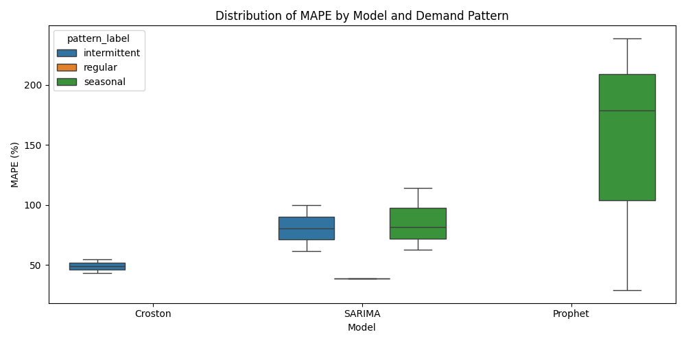
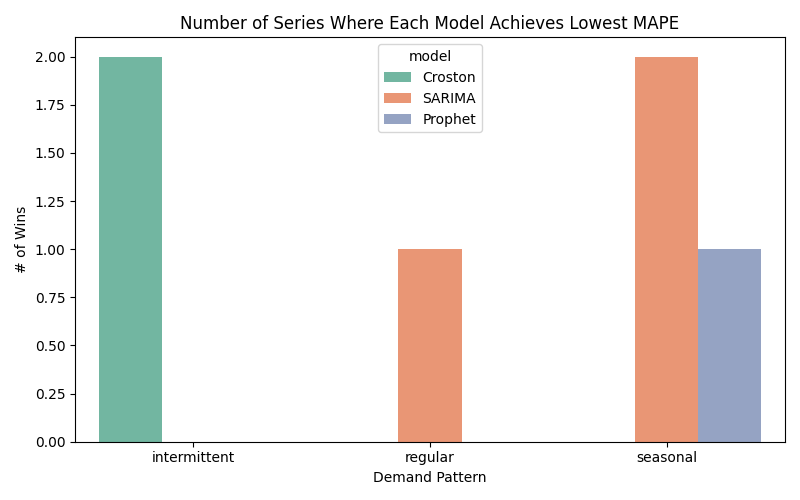
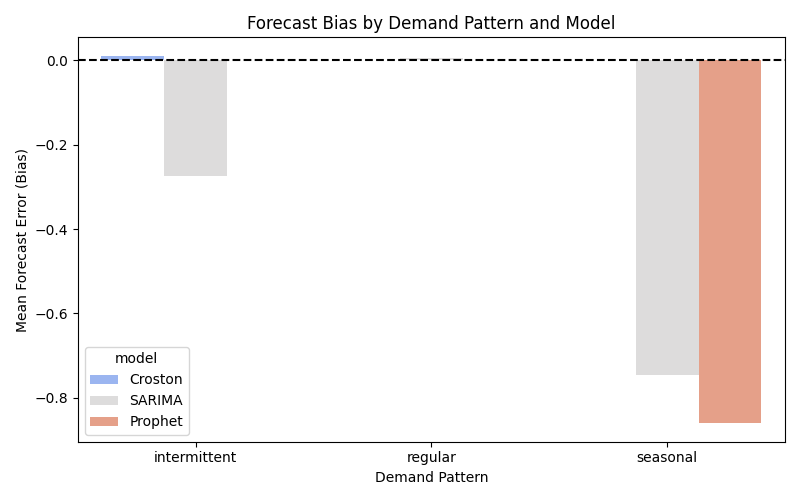
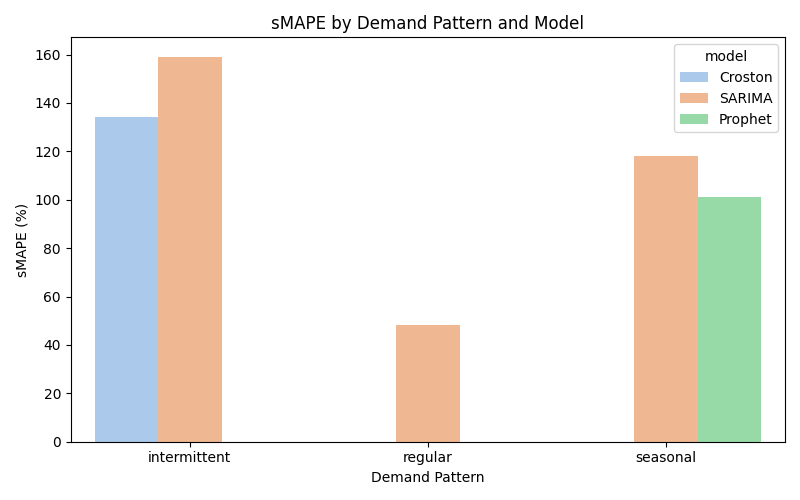

Results
1. Overview
This section presents the forecasting results for the sampled store–item series across the three demand patterns: intermittent, regular, and seasonal. Model performance is evaluated using six complementary error metrics—MAPE, MAE, RMSE, sMAPE, Bias, and MASE—to ensure robustness to low-volume series and asymmetric error behavior. The results focus on the models that were found to be practically usable: Croston (intermittent), SARIMA (across all patterns), and Prophet (seasonal).
2. Overall Model Accuracy (MAPE Comparison)
Figure X summarizes the mean MAPE achieved by each model within the demand patterns where it could be applied. For intermittent demand, Croston delivers the lowest forecasting error, achieving substantially lower MAPE than SARIMA. This confirms Croston’s suitability for sparse series with zero-inflated structure, where explicitly modeling demand occurrence yields more stable forecasts.
For regular demand, SARIMA achieves the lowest average MAPE among all tested models, reflecting its ability to capture stable autoregressive behavior when sales volumes are relatively consistent month to month. The model’s differencing and smoothing components are well suited to the modest temporal structure observed in these series.
For seasonal demand, SARIMA again outperforms Prophet, even though Prophet is specifically designed for decompositional trend–seasonality modeling. The relatively poor Prophet performance is likely attributable to limited seasonal depth in the historical data—many series contain fewer than two full yearly cycles—making it difficult for Prophet to estimate stable seasonal components. SARIMA, in contrast, leverages differencing and short-term dependence rather than requiring strong seasonal structure.

Mean MAPE by model and demand pattern.
Summary of Forecasting Performance Across All Metrics
| Demand Pattern | Model | MAPE | RMSE | MAE | sMAPE | Bias | MASE |
|---|---|---|---|---|---|---|---|
| intermittent | Croston | 48.864 | 0.522 | 0.519 | 134.179 | 0.011 | 1.220 |
| intermittent | SARIMA | 80.633 | 1.237 | 1.069 | 159.164 | -0.274 | 2.214 |
| regular | SARIMA | 38.848 | 0.482 | 0.454 | 48.427 | 0.005 | 0.349 |
| seasonal | Prophet | 148.904 | 3.902 | 3.344 | 101.285 | -0.861 | 2.549 |
| seasonal | SARIMA | 86.126 | 2.439 | 2.129 | 118.171 | -0.748 | 1.526 |
Table presents the full set of evaluation metrics across all models and demand patterns. The results confirm the earlier findings: Croston achieves the lowest errors for intermittent demand across all metrics, SARIMA provides the most accurate and stable forecasts for regular demand, and SARIMA outperforms Prophet for seasonal demand on every metric, including symmetric percentage error and scaled error. Bias patterns further show that Prophet systematically under-forecasts seasonal peaks, whereas SARIMA maintains smaller and more consistent deviations. These results reinforce the importance of using pattern-specific models rather than a single unified forecasting approach.
3. Distribution of Forecast Errors (MAPE Boxplots)
While mean MAPE provides a summary measure of accuracy, it obscures the variability across individual store–item series. Figure X presents MAPE boxplots for each model within its applicable demand patterns. The distributional patterns reinforce the conclusions above.
For intermittent demand, Croston not only achieves the lowest mean MAPE but also displays a tighter interquartile range than SARIMA, indicating more stable performance across series. SARIMA shows a wider spread, with several high-error outliers—consistent with the model’s sensitivity to long zero stretches.
For regular demand, SARIMA exhibits minimal dispersion, suggesting strong reliability across all sampled series. Error magnitudes are consistently low, reflecting the homogeneity of regular demand behavior.
For seasonal demand, both SARIMA and Prophet show higher variability. However, Prophet’s distribution is substantially more dispersed, with numerous high-error cases driven by misestimated seasonal peaks or insufficient seasonal observations. SARIMA’s distribution, while imperfect, is more concentrated and avoids extreme outliers.

Distribution of MAPE by model and demand pattern.
4. Best-Performing Models (Win Count Analysis)
To further compare model performance, Figure X reports the number of store–item series for which each model achieved the lowest MAPE (“wins”). This metric highlights dominance within each demand pattern.
Croston wins the majority of intermittent cases, reflecting its structural advantage for zero-inflated series. SARIMA wins exclusively for regular demand, confirming its appropriateness for stable series. For seasonal demand, SARIMA again wins more frequently than Prophet, reinforcing the earlier observation that Prophet requires richer seasonal histories to perform optimally.
The win-count results provide a pattern-level summary consistent with both the mean and distributional accuracy evaluations.

Number of series where each model achieves the lowest MAPE.
5. Forecast Bias
Beyond accuracy, understanding systematic over- or under-forecasting is crucial for operational planning. Figure X reports the mean forecast bias across patterns and models.
Croston shows near-zero bias for intermittent demand, emphasizing its balanced behavior even when sales are highly irregular. SARIMA exhibits small but consistently negative bias for regular demand, indicating slight under-forecasting—likely due to differencing smoothing short-term trends. In seasonal demand, Prophet shows pronounced negative bias, substantially under-forecasting high seasonal peaks. SARIMA’s bias is also negative but notably smaller, suggesting better adaptation to peak-driven patterns.
These results highlight differences in structural assumptions: Prophet’s decompositional framework over-smooths limited seasonal cycles, while SARIMA preserves short-term momentum more effectively.

Mean forecast bias across models and demand patterns.
6. Robustness Check: sMAPE Results
Accuracy conclusions are further validated through symmetric MAPE (sMAPE), which mitigates the inflation of percentage errors for low-volume series. As shown in Figure X, the relative ordering of models remains consistent with the MAPE findings:
- Croston maintains the lowest symmetric error for intermittent demand.
- SARIMA again performs best for regular demand.
- SARIMA outperforms Prophet for seasonal demand.
The consistency across error metrics indicates that the performance differences are driven by underlying model–data alignment rather than artifacts of the error measure.

Mean sMAPE across demand patterns and models.
7. Summary of Findings
Across all evaluation metrics and demand patterns, three key results emerge:
- Intermittent demand is best captured by Croston’s method, which directly models demand occurrence and size.
- Regular demand is best modeled by SARIMA, whose autoregressive structure matches the smooth monthly behavior of these series.
- Seasonal demand is most reliably handled by SARIMA, not Prophet, due to limited seasonal history in the dataset.
Together, these findings demonstrate that forecasting performance varies sharply across demand patterns and that a one-size-fits-all approach is suboptimal. Pattern-specific model assignment meaningfully improves accuracy, stability, and interpretability of dealer-level sales forecasts.